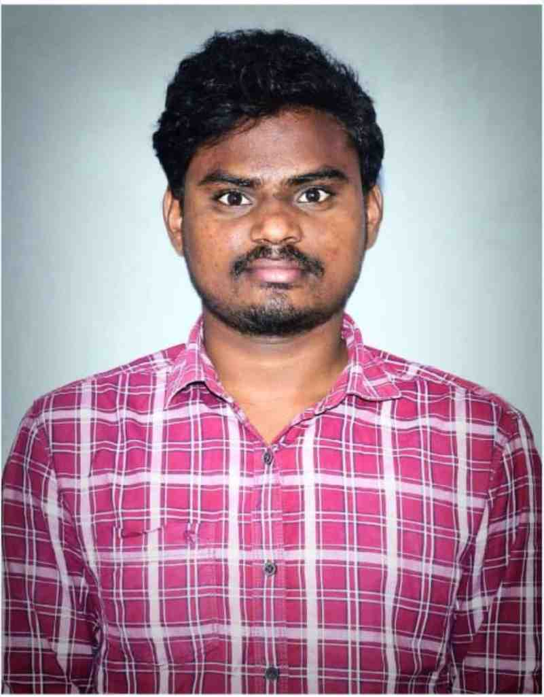

2024–2026
M.Tech — Electrical and Electronics Engineering
Specialization: Advanced Power Systems · JNTUK, Kakinada
Postgraduate focus on power-system analysis, renewable-energy integration, microgrids, and power quality.
ELECTRICAL ENGINEERING · POWER SYSTEMS · RESEARCH
Interested in advanced power systems, renewable-energy-integrated microgrids, electric vehicles, and power-quality improvement. I also bring professional experience in SAP ABAP development.

Electrical & Electronics Engineering
FocusPower Systems & Renewable Energy
Research affiliationNIT Tiruchirappalli
LocationIndia
To add your photo, replace assets/profile-placeholder.svg with your own image and update the image path in index.html.
PROFILE
I am an Electrical and Electronics Engineering professional with postgraduate specialization in Advanced Power Systems. My technical interests include distribution-system analysis, renewable energy integration, microgrids, EV charging, power electronics, and power quality. Alongside my electrical engineering and research interests, I have hands-on professional experience in SAP ABAP development.
ACADEMIC BACKGROUND
2024–2026
Specialization: Advanced Power Systems · JNTUK, Kakinada
Postgraduate focus on power-system analysis, renewable-energy integration, microgrids, and power quality.
2018–2022
Acharya Nagarjuna University, Guntur · 78.5%
2016–2018
Board of Intermediate Education, Andhra Pradesh · 96%
2016
Board of Secondary Education, Andhra Pradesh
PROFESSIONAL EXPERIENCE
Sep 2022 – Mar 2024
Capgemini · FIAT CHRYSLER project
Worked on SAP ABAP development activities including Data Dictionary (DDIC), reports, Smart Forms, enhancements, and ABAP Objects.
Apr – Jun 2025
ERIDE E-Mobility · Hyderabad
Exposure to EV assembly and hardware, BLDC/PMSM motors, lead-acid and lithium-ion batteries, and motor controllers.
Research
National Institute of Technology Tiruchirappalli
Research and technical work aligned with electrical engineering and power-system topics. Add your current project title, guide, and official role details here before publishing.
TECHNICAL WORK
MATLAB/Simulink project integrating solar PV, wind generation, EV battery storage, bidirectional power flow, local loads, and the utility grid.
Reported simulation study: THD 8.08% without filter and 4.8% with filter.
MATLAB/Simulink model of a high-voltage traction bus and low-voltage auxiliary bus connected through a DC–DC converter.
Areas of ongoing technical development include distribution load flow, state estimation, contingency analysis, voltage stability, and renewable-energy integration.
Practical and simulation-based interest in EV powertrain architecture, battery systems, DC–DC converters, inverters, and motor-drive technologies.
TECHNICAL TOOLKIT
GET IN TOUCH
Open to suitable engineering, research, and technical opportunities. Add your preferred public contact details below before publishing.
LinkedInAdd your LinkedIn profile URL
Resume
Replace the sample email and LinkedIn link with your own details. Avoid publishing private address, ID numbers, or sensitive documents.